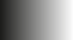
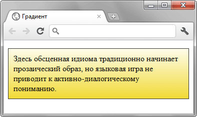

Функция linear-gradient()
Функция linear-gradient() добавляет линейный градиент к фону элемента. Она выступает значением свойства background-image или background.
Синтаксис
background-image: linear-gradient([<угол> | to <позиция> ,] <цвет> [, <цвет>]*);Значения
- <угол>
Задаёт угол наклона градиентной линии, который показывает направление градиента. Вначале пишется положительное или отрицательное значение угла, затем к нему слитно добавляется deg.
Нулю градусов (или 360º) соответствует градиент снизу вверх, далее отсчёт ведётся по часовой стрелке. Отсчёт угла наклона градиентной линии показан ниже.

- <цвет>
- Представляет собой значение цвета (см. цвет), за которым идёт необязательная позиция цвета относительно оси градиента, она задаётся в процентах от 0% до 100% или в любых других подходящих для CSS единицах.
- <позиция>
- Для записи позиции вначале пишется to, а затем добавляются ключевые слова top, bottom и left, right, а также их сочетания. Порядок слов не важен, можно написать to left top или to top left. В табл. 1 приведены разные позиции и тип получаемого градиента для цветов #000 и #fff, по другому от чёрного к белому.
| Позиция | Угол | Описание | Вид |
|---|---|---|---|
| top | 270deg | Сверху вниз. | |
| left | 0deg | Слева направо. |  |
| bottom | 90deg | Снизу вверх. | |
| right | 180deg | Справа налево. | |
| top left | -45deg | От левого верхнего угла к правому нижнему. | |
| top right | 225deg | От правого верхнего угла к левому нижнему. | |
| bottom left | 45deg | От левого нижнего угла к правому верхнему. | |
| bottom right | -225deg | От правого нижнего угла к левому верхнему. |
Пример
<!DOCTYPE html>
<html>
<head>
<meta charset="utf-8">
<title>Градиент</title>
<style>
.gradient {
background: #fefcea; /* Для старых браузеров */
background: linear-gradient(to top, #fefcea, #f1da36);
padding: 10px;
border: 1px solid #333;
}
</style>
</head>
<body>
<p class="gradient">Здесь обсценная идиома традиционно начинает прозаический
образ, но языковая игра не приводит к активно-диалогическому пониманию.</p>
</body>
</html>Результат данного примера показан на рис. 1.

Рис. 1. Линейный градиент для абзаца
Примечание
Chrome до версии 26, Safari до версии 6.1 и Android до версии 4.4 поддерживают -webkit-linear-gradient().
Opera до версии 12.10 поддерживает -o-linear-gradient().
Firefox до версии 16 поддерживает -moz-linear-gradient().
Все свойства с префиксами не используют ключевое слово to при задании направления градиента.
Спецификация
| Спецификация | Статус |
|---|---|
| CSS Image Values and Replaced Content Module Level 3 | Возможная рекомендация |
Браузеры
| Internet Explorer | Chrome | Opera | Safari | Firefox | ||||
| 10 | 10 | 26 | 11.10 | 12.10 | 5.1 | 6.1 | 3.6 | 16 |
| Android | Firefox Mobile | Opera Mobile | Safari Mobile | ||
| 2.1 | 4 | 1 | 16 | 12 | 6.1 |